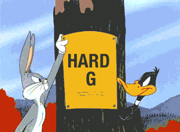
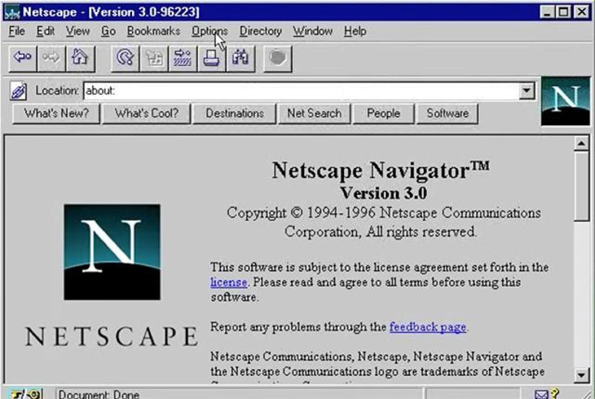
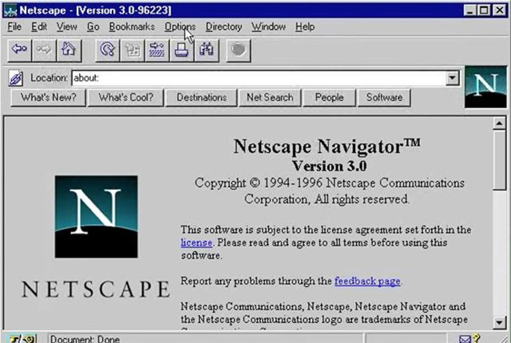
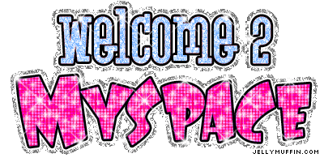
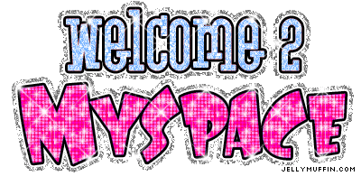
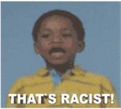

So What is a GIF?
The Graphics Interchange Format (always shortened as GIF) is a bitmap image format widely used on the Internet for its flexible web support and portability. The format, which supports up to 8 bits per pixel and a palette of up to 256 distinct colors for each frame, is well-suited for handling simpler images like graphics and logos with solid color areas, while it doesn't fare as well in reproduction of color photographs with continuous colors. GIF was one of the first two image formats commonly used on the web and the first image format to support color display until the arrival of JPEG in 1992.
GIF vs JIF
Along with whether or not Al Gore invented the Internet, figuring out the correct pronunciation of GIF is one of the earliest questions of the Internet. I grew up believing it was hard-G GIF. Most people I know pronounce it like that too. Even the White House agreed on pronouncing GIF like 'gift'. But we have to re-evaluate the whole argument again because the inventor of GIF—PAPA GIF Steve Wilhite—says its pronounced JIF. What. The. Hell.
Steve Wilhite, who is accepting a lifetime achievement award at The Webby Awards, told the NY Times how annoyed he was at the debate over the pronunciation of GIF:
“The Oxford English Dictionary accepts both pronunciations. They are wrong. It is a soft ‘G,’ pronounced ‘jif.’ End of story.”
You hear that? They are wrong. He's saying we, the people of America, are wrong. It is a soft 'G', pronounced 'jif'. Sir, why did you not name it JIF like the peanut butter then! End of story. I have long thought the story was over too, but I'm guessing we're reading different books.
But he is Papa Gif, and parents have a certain amount of right over the things they bring into this world. If you want to name your kid Dwyane instead of Dwayne like Dwyane Wade, go ahead (but it's still pronounced duh-wayne). And also, Wilhite isn't exactly wrong in his thinking. The hard-G pronunciation of the letter G usually comes when a, o, or u follows it (think gas, good, or guy). We pronounce G's as the soft-G when i, e, or y follow it (think giraffe, German, or analogy). There are exceptions of course, but in general practice, Wilhite has his point. GIF is followed by an I.
The problem with Wilhite's thinking is how we see acronyms. Are they their own words or do they stand for something? Is BBC a word? Buhbuhck? Or is it B-B-C. If you combine the letters into a word, how does jay-peg for JPEG make sense as opposed to juh-peg? If GIF stands for Graphics Interchange Format, does the 'Graphics' portion of the phrase point toward a hard-G in the acronym? It gets confusing, I know.
But the clearest difference for me is that there are things pronounced JIF and not spelled GIF already. The peanut butter comes to mind. Jiffy Lube. Back in a jiffy. If you want to pronounce GIF like JIF, spell it JIF (that's also the JPEG Interchange Format, so I can see why maybe not). If you spell it with a G and use it as an acronym for the word Graphics, if there are words like gift, girl, give, Gizmodo and many more gi- words being pronounced with a hard-G and if the President of the United States of America decrees that GIF is GIF and not JIF, well then, you are wrong. Even if you are the father.
Browser Compatibility
In 1991, Tim Berners Lee opened the web to the public with the launch of the World Wide Web project. Soon after that in January 1993, one of the first popular web browsers Mosaic (shown below, left) was unveiled with capability to embed images into an HTML page. Mosaic browser then evolved into the foundation for Netscape Navigator (shown below, right), which was released in December 1994. The 2.0 version of Netscape Navigator is widely credited with pioneering the technology of Application Extension Blocks, enabling the automatic looping of animated GIFs displayed in webpages. This feature was soon adapted by other browsers in the following years, thus paving the road for the ubiquity of animated GIFs in the years to come.
 

Early Internet Usage
Following the launch of personal web hosting services and basic HTML-editing platforms like Geocities and Tripod in 1995, use of GIF files in website design became nearly ubiquitous and even over-saturated. Animated GIF banners with specific functions also became popular, the most notable examples being dancing flames, flashing "new" signs and waving American flags for decorations, constantly opening-and-closing mailboxes for linking to e-mail address and contact pages, as well "under construction" roadsigns used to notify visitors that the webpage is unavailable at the moment.

GIF Oversaturation
Meanwhile, the indiscriminate usage of animated GIFs eventually led to its negative associations with tacky web design and poor sense of aesthetics, not to mention the constant reloading of bright, high contrast-colored animations posed distraction for the readers. Some Internet users became so annoyed by the overwhelming presence of GIFs on webpages that they coined the phenomenon "banner blindness."
 

By the late 1990s, GIF format began to lose its glow of fashionable connotation with the growing criticisms against its inefficiency for displaying still images and indiscriminate usage that led to "banner blindness," not to mention that advertisers began to prefer text-based or flash-based banners over flashy, distractive animations. Furthermore, the arrival of newer and more efficient compression technologies like Adobe Flash, JPEG and PNG image formats also contributed to the diminishing influence of GIFs.
Pre-YouTube Era
While GIF was no longer considered the staple image format in web design at the dawn of the new century, its unique auto-play and auto-loop features gave rise to another widespread use, this time, in the rapidly growing world of Internet culture. In fact, some of the earliest known Internet memes and viral media took the form of GIF animations, such as the Dancing Baby and the Hampster Dance and Bunchie.

Resurgence in Web 2.0
Despite the advents of high quality video-streaming services and video-sharing communities in the late 2000s and early 2010s, GIFs didn't fade away into oblivion. Instead, the seemingly outdated image format became embraced by many users on photo-sharing platforms and social networking sites like Tumblr, Imgur and Google Plus that supported GIF animation, giving rise to its second renaissance.
